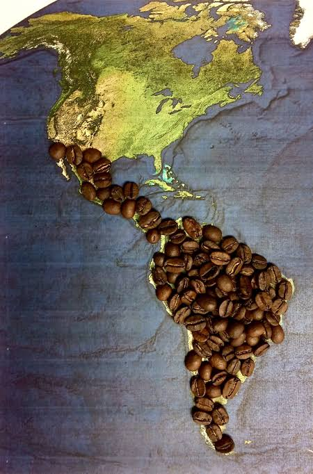

アフリカ産コーヒー豆

当店で取り扱うコーヒー豆はすべてグレーダーにより厳選され、丁寧に浅煎り〜深煎りでお届けします。
エチオピアイルガチェフェ
ォッシュド製法。フローラルな香りと柑橘系の爽やかな酸味が広がります。
ケニア
ダブルウォッシュド製法。カシスやウメを思わせる濃密な果実味と力強いボディ。
中南米産コーヒー豆

バランスが良く、甘みとコクが際立つエリアです。
コロンビアウィラ
アナエロビックナチュラル。キャラメルやダークチョコレートのような深みのある味わい。
グアテマラ アンティグア
ウォッシュド製法。上品な花香とナッツの香ばしさ、豊かな甘みのバランス。
コピ・ルアク
ジャコウネコの消化酵素によって発酵された、希少で芳醇な香りとまろやかなコクが特徴のコーヒーです。
インドネシア スマトラ
ナチュラル製法。キャラメルやバニラのような甘い香りと、重厚で深いコク、酸味の少ないまろやかな味わい。
インドネシア バリ
ウォッシュド製法。フルーティーな華やかさとナッツの香ばしさ、すっきりとした上品な後味。